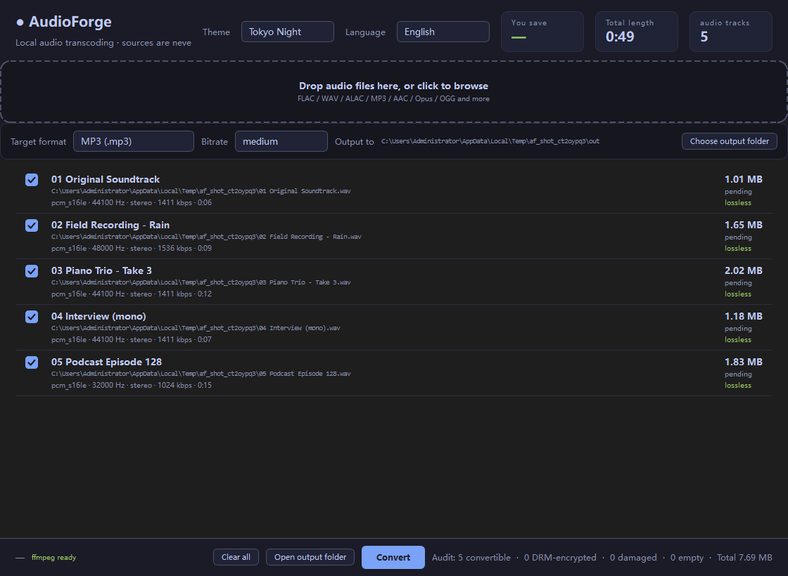

Drop in audio, pick a format, press one button. Your sources are never
touched, and every single output is read back with ffprobe to confirm it's
really what you asked for.

ffprobe — codec, sample rate, channels, duration, lossless or lossy.It finishes, it looks successful, and the file is broken. So every output is read back and checked. Ten milliseconds is cheap insurance.
No duration or sample rate means no conversion. Empty files, random bytes and text
files renamed .mp3 are rejected with a stated reason, not silently skipped.
Output always lands in a separate folder. Same names get numbered: song.mp3,
song (2).mp3, song (3).mp3. There is no overwrite option, and
there never will be.
After each conversion the output is re-read with ffprobe and checked for
codec, duration and lossless-ness. The self-test transcodes all seven formats for real.
Output is written to .part and only renamed on success. A failed run
leaves nothing behind — no half-written file, no stray temp files.
Lossless to lossless is skipped with a reason: turning FLAC into WAV just swaps the container and doubles the size.
Chinese and English, switchable top-right. Six themes, all checked against WCAG AA. Fully offline — no network calls, ever.
Input containers are unrestricted — anything ffprobe recognises works
(FLAC / WAV / AIFF / M4A / MP3 / AAC / Opus / OGG / WMA / APE / WavPack …).
A converter is only trustworthy if you're willing to run it on files you care about.
.part file is removed on failure, so there's never a truncated
output masquerading as a real one.ffprobe can't read the duration, the file is reported, not
guessed at.Switch in the top-right; the choice is written back to settings.yaml and
survives a restart. Every foreground colour is checked against WCAG AA — that threshold
is enforced by the self-test, so a palette that breaks it fails the build.
Single exe, no install, no dependencies.
Licence: CC BY-NC 4.0 — free to modify and remix, attribution to Matou1118 required, non-commercial only. Full terms